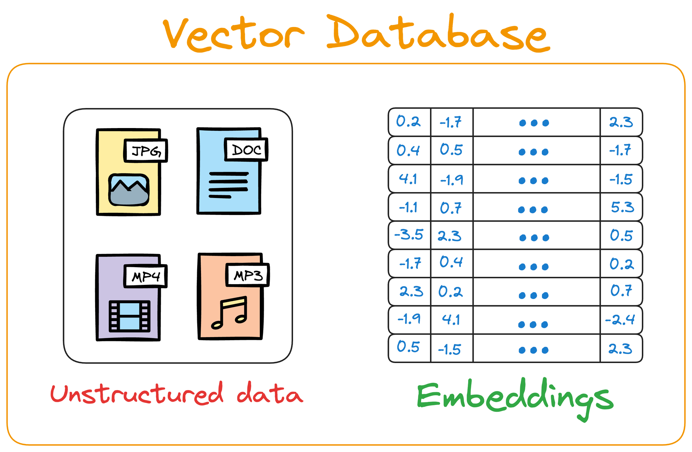
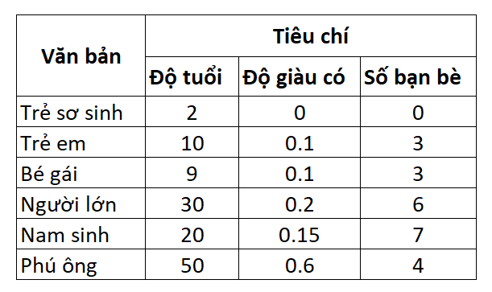
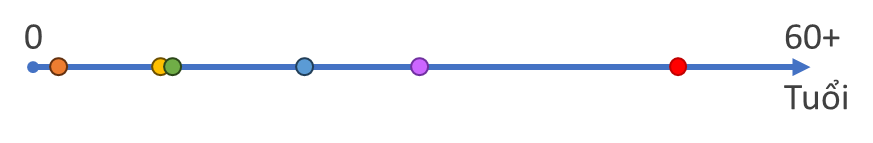
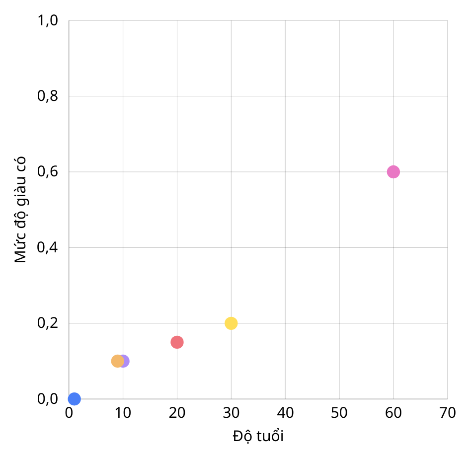
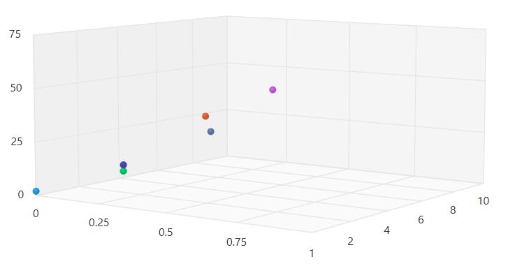

Từ Vector Database, Semantic Search đến ứng dụng xây RAG thực tế với ChromaDB, OpenAI Embeddings và Responses API.
Lưu và quản lý embedding hiệu quả.
Tìm theo ý nghĩa thay vì chỉ từ khóa.
Nền tảng cho chatbot tài liệu và hỏi đáp.
Biết vector database là gì và vì sao nó quan trọng trong ứng dụng AI hiện đại.
Hiểu client, collection, record, metadata và cách ChromaDB tổ chức dữ liệu.
Biết cách tạo embedding, lưu vector và query top-k kết quả gần nhất.
Hoàn thành một demo tìm kiếm tài liệu có thể mở rộng thành RAG app.
Từ khóa tìm kiếm: machine learning
Dữ liệu trong database:
"Tôi đang học AI"
"Tôi đang học Trí tuệ nhân tạo"
"Tôi đang học Deep learning"
Kết quả tìm kiếm: 0 kết quảKhi chỉ tìm kiếm theo từ khóa, hệ thống dễ bỏ sót tài liệu có cùng ý nhưng dùng từ khác.
Từ khóa tìm kiếm
↓
Hệ thống hiểu ý nghĩa
↓
Tìm nội dung tương tựThay vì hỏi "có trùng từ không?", semantic search hỏi "hai nội dung có nói cùng một ý không?".
Vector database là database được tối ưu để lưu và truy vấn dữ liệu dạng:
[0.1, 0.5, 0.9, 0.2, 0.8,...]Mỗi đoạn text, ảnh hoặc audio có thể được mã hóa thành một dãy số để đo mức độ giống nhau.
Khác với database truyền thống lưu dữ liệu dạng số hay chữ,... Vector database lưu vector và tài liệu gốc của vector đó.

| Công cụ | Điểm mạnh | Phù hợp khi |
|---|---|---|
| ChromaDB | Nhẹ, dễ chạy local, thân thiện cho Python và code demo. | Học tập, demo, RAG nhỏ và vừa. |
| Pinecone | Dịch vụ managed vector database, vận hành đơn giản. | Ưu tiên cloud và mở rộng nhanh. |
| Milvus | Mạnh về khả năng mở rộng và hệ sinh thái enterprise. | Dữ liệu lớn, hệ thống production. |
| Weaviate / Qdrant | Nhiều tính năng truy vấn, filter và triển khai linh hoạt. | Cần nhiều lựa chọn kiến trúc. |
| PostgreSQL + pgvector | Dùng extension pgvector để thêm khả năng vector vào PostgreSQL. | Đã dùng PostgreSQL, muốn thêm vector mà không học hệ mới. |
Dễ học, dễ thử nghiệm, dễ nhìn thấy cách dữ liệu được tổ chức.
Không bắt buộc phải lên cloud ngay từ đầu, phù hợp môi trường học tập.
API rõ ràng: client, collection, add, query, filter.
Prototype nhanh, dễ quan sát kết quả tìm kiếm để tối ưu.
Vector Embedding là kỹ thuật chuyển đổi các dạng dữ liệu phi cấu trúc (đoạn văn, hình ảnh, âm thanh) thành các mảng số thực (vector).
Có thể hiểu đây là cách "số hóa" ngữ nghĩa của dữ liệu để máy tính có thể hiểu, phân tích và tính toán được.
Ví dụ văn bản gốc:
Tôi thích học AISau khi thực hiện embedding:
[0.21, -0.43, 0.77, ...]Mỗi con số trong vector đại diện cho một đặc trưng ngữ nghĩa của văn bản.

Biểu diễn dữ liệu với 1 tiêu chí

Biểu diễn dữ liệu với 2 tiêu chí

Biểu diễn dữ liệu với đủ 3 tiêu chí

Mỗi tiêu chí được gọi là một chiều (dimension) trong vector.
Vector embedding được tạo ra bằng cách sử dụng các mô hình đã được huấn luyện. Các mô hình này có khả năng đánh giá văn bản dựa trên hàng ngàn tiêu chí (dimensions) khác nhau.
import openai
response = openai.embeddings.create(
input="Your text string goes here",
model="text-embedding-3-small"
)
print(response.data[0].embedding)
print("Length of embedding:", len(response.data[0].embedding))
# Length of embedding: 1536d = sqrt((x2 - x1)² + (y2 - y1)²)d = sqrt((x2 - x1)² + (y2 - y1)² + (z2 - z1)²)Tạo, quản lý database, collection và record
Có 2 cách tạo database: PersistentClient và Client
import chromadb
# Tạo PersistentClient để lưu dữ liệu vào ổ cứng
client = chromadb.PersistentClient(
path="./chroma_data"
)
# Tạo Client để lưu dữ liệu chỉ trong RAM
client = chromadb.Client()
collection = client.get_or_create_collection(
name="khoa_hoc_ai"
)# Thêm record
collection.add(
ids=["doc_1"],
embeddings=[vector],
documents=["ChromaDB là database cho vector"],
metadata=[{"source": "website"}]
)
# Sửa record, ids là bắt buộc
collection.update(
ids=["doc_1"],
embeddings=[new_vector],
documents=["ChromaDB có collection và record"],
)
# Xóa record
collection.delete(ids=["doc_1"])# Ví dụ về metadata
collection.add(
ids=["doc_1"],
embeddings=[vector], # Vector tạo bởi OpenAI API
documents=["ChromaDB là database cho vector"],
metadatas=[{
"topic": "AI",
"title": "Giới thiệu ChromaDB",
"user_id": "user_001",
"created_at": "2026-03-12T10:00:00Z"
}]
)# query_vector được tạo bởi OpenAI API trước
results = collection.query(
query_embeddings=[query_vector],
where={"user_id": "user_001"},
n_results=3
)
print(results)results = collection.query(
query_embeddings=[query_vector],
where={"topic": "AI"},
n_results=3,
include=["documents", "metadatas"]
)Chunking là chia tài liệu dài thành các đoạn nhỏ trước khi tạo embedding.
500 token / chunkVí dụ:
chunk 1: 0-500
chunk 2: 450-950giữ contextdef chunk_text(text, chunk_size=500, overlap=50):
chunks = []
start = 0
while start < len(text):
end = start + chunk_size
chunk = text[start:end]
chunks.append(chunk)
if end >= len(text):
break
start = end - overlap
return chunksÝ tưởng: đi từng bước trên chuỗi, mỗi lần lấy một đoạn có kích thước cố định rồi lùi lại một phần để tạo overlap.
Embedding được tạo qua endpoint embeddings, không phải Responses API.
from openai import OpenAI
client = OpenAI()
response = client.embeddings.create(
model="text-embedding-3-small",
input="ChromaDB là vector database nhẹ cho AI"
)
vector = response.data[0].embedding
print(len(vector)) # thường là 1536 chiềuimport chromadb
client = chromadb.PersistentClient(path="./chroma_data")
collection = client.get_or_create_collection(
name="rag_docs",
embedding_function=None
)
collection.add(
ids=["doc_1"],
embeddings=[vector],
documents=["ChromaDB là vector database nhẹ cho AI"],
metadatas=[{"topic": "AI", "source": "slide"}]
)Thông tin thường được lưu theo bộ:
id
embedding
document
metadataKhi bạn tự tạo embedding bằng OpenAI trước, nên để embedding_function=None cho collection để tránh re-embed.
RAM onlyNhanh để thử nghiệm nhưng chỉ tồn tại trong phiên chạy hiện tại.
ghi xuống ổ đĩaNếu không persist thì:
restart → mất dữ liệuQuery text
↓
Embedding
↓
Vector searchquery_result = collection.query(
query_embeddings=[query_vector],
n_results=3,
include=["documents", "metadatas", "distances"]
)Nếu collection có gắn embedding function, bạn cũng có thể query trực tiếp bằng query_texts.
Ví dụ:
n_results = 3ChromaDB sẽ trả về:
3 vector giống nhấtVí dụ:
where = {"topic": "AI"}Hệ thống chỉ search trong phần dữ liệu:
topic = AIresults = collection.query(
query_embeddings=[query_vector],
where={"topic": "AI"},
n_results=3
)Upload file
↓
Chunk
↓
Embedding
↓
ChromaDB
↓
SearchSau bước search, các đoạn phù hợp nhất sẽ được ghép vào prompt và gửi sang client.responses.create(...) để LLM tạo câu trả lời có căn cứ.
UI có thể xây nhanh bằng:
Tính năng cần có:
upload text
upload pdf
searchdef answer_query(question):
query_vector = client.embeddings.create(
model="text-embedding-3-small",
input=question
).data[0].embedding
hits = collection.query(
query_embeddings=[query_vector],
n_results=3
)
context = "\n\n".join(hits["documents"][0])
response = llm.responses.create(
model="gpt-5-mini",
instructions="Trả lời dựa trên ngữ cảnh được cung cấp.",
input=f"Câu hỏi: {question}\n\nNgữ cảnh:\n{context}"
)
return response.output_textQuá lớn thì loãng ý, quá nhỏ thì mất ngữ cảnh.
Giúp giữ mạch thông tin khi ý chính nằm ở ranh giới hai đoạn.
Model tốt hơn thường cho retrieval sát nghĩa hơn.
Thu hẹp không gian tìm kiếm để giảm nhiễu.
Chọn số lượng chunk phù hợp để cân bằng độ đủ và độ sạch của context.